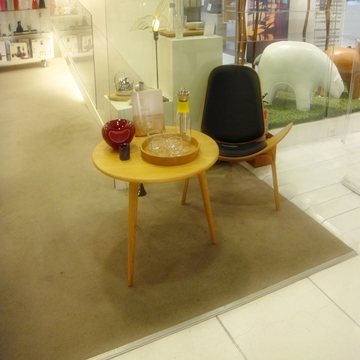
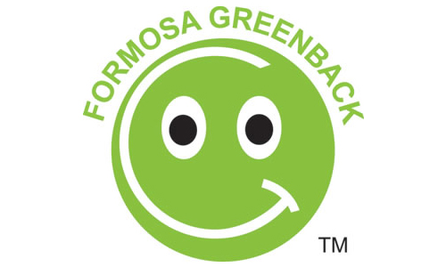
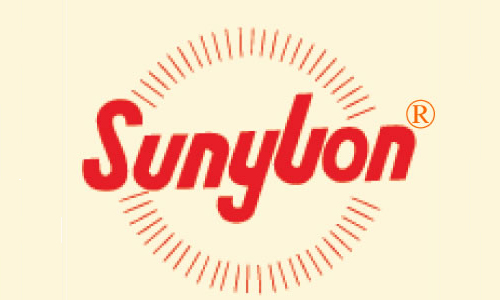

概念
Monkey Eat Banana的概念。
MonkeyEat Banana
提供的是讓心變得更美麗的地毯。
猴子吃香蕉地毯工坊於2005年，創立台中市。
1. 從事網路地毯銷售。創業初一直以服務居家為主要對象,服務案件後，除個人居家自用,
2. ,進一步服務DIY嗜好者、辦公大樓、公家機關、世貿展覽場及各大主題賣場‧‧等。
3. 產品項目除了規格品外亦可訂製特殊尺寸或造型,地毯施工也是服務項目之一。
所有產品皆通過中華民國消防署防焰性能合格證書的申請，
並取得環保標章。
2005年成立台中市，地址在台中市大進街128號8樓之2。
2008年成立台北工作室。

-

環保地毯
重量相較於cushion的瀝青硬襯墊地毯輕盈‧吸收腳部衝擊，減少腿部肌肉疲勞。環保，完全可回收。減緩毯面的磨損及延長毯面的壽命。
-

台化耐隆回收環保絲
Sunylon®回收環保絲100%使用回收素材之耐隆粒,每年減少對新鮮CPL需求量2.1萬公噸,製程廢水減量及節約熱能可減少2.15萬公噸二氧化碳排放量
-
選擇對的地毯
地毯在裝潢裡佔著很重要的位子, 每一個環境氛圍會因為地毯的顏色, 花樣, 材質而有不同的呈現. 如何選擇地毯? 只要一通電話我們會親切的幫助您。